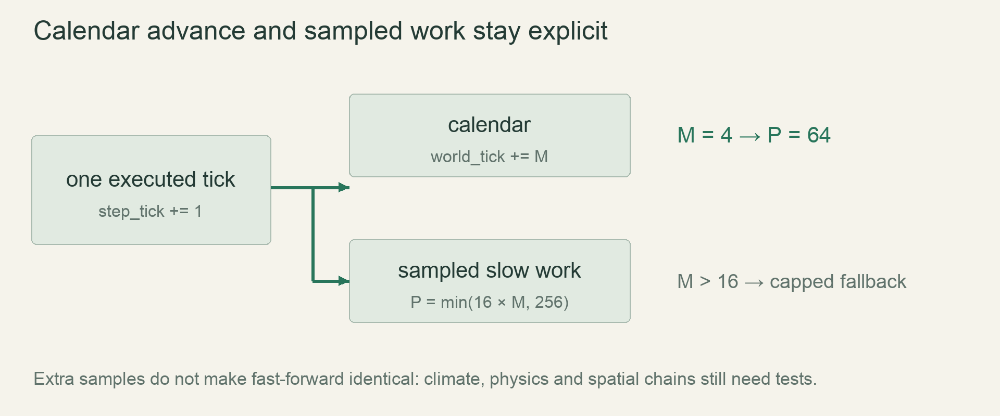

M3 / Time & ecologyLesson 59 of 100 · ~5 min reading + build time
Sample slow work deterministically
Off-screen cells receive no slow work. Fixed inputs reproduce the exact pick sequence, while measured frequencies are evaluated statistically.
Previously: Distribute exact calendar multipliers. Keep that working result available before starting this lesson.
Why we need this now
Rot and growth do not need to scan every world cell on every physics tick. A bounded selection of active cells spreads work over time. To replay that selection, random choices must come from recorded inputs and sampling must not accidentally pick the same cell many times within one chunk tick.
Your result: Off-screen cells receive no slow work. Fixed inputs reproduce the exact pick sequence, while measured frequencies are evaluated statistically.

01Build a permutation from an odd stride
A chunk has 4096 cells, a power of two. Choose a start and an odd stride, then sample (start+i*stride) modulo 4096. Any odd stride is relatively prime to 4096, so the sequence visits every index before repeating. Taking its first 16 or at most 256 entries therefore gives distinct picks within that chunk tick. Derive start and stride from seed, executed tick and chunk position. The lab checks distinctness; choosing a good hash distribution is another documented implementation choice.
02Clip after sampling
Boundary chunks overlap the active rectangle only partially. The design samples chunk-local indices, converts each into a world coordinate and skips picks outside the active region. This preserves the per-cell sampling opportunity under the specified procedure without updating frozen cells. Do not resample until you find 16 valid cells unless you intentionally change the rate at partially active edges. A fixed pick budget remains bounded even when only a tiny corner of a chunk is active.
03Understand expected visits, not guaranteed appointments
At M=1, 16 picks times 20 executed ticks gives 320 picks per second per full chunk. Dividing 4096 by 320 gives 12.8 seconds between visits on average under an appropriately distributed changing permutation. Over a 24000-tick day that is 93.75 expected opportunities per cell. It is not a promise that every cell is visited at exact intervals. Use distributions across fixed seeds for rate tuning and precise fixed input sequences for regression.
04A parity bit is not enough for sparse visits
The current spec proposes skipping a slow cell when its stored bit equals step_tick&1. A sparsely selected cell can retain that same bit from two ticks ago and be skipped even though it has not run this tick. Distinct picks solve duplicate selection, but created neighbour edits still need protection. Use a true last_updated_tick stamp in temporary active metadata or stage edits until the slow pass ends, then apply them in a fixed order. This is an explicit design correction to review, not a claim that the one-bit sparse guard is exact.
Read → predict → run → change
Walk through the working example
Isolated lab: save as scratch.rs, then run rustc --edition=2024 --test scratch.rs -o /tmp/rusty-lab-59 followed by /tmp/rusty-lab-59. Port the tested helper into the game only after the lab is understood.
Download this worked example ↧
use std::collections::HashSet;
fn picks(start:usize,stride:usize,count:usize)->Vec<usize> {
assert!(stride%2==1 && count<=4096);
(0..count).map(|i|(start.wrapping_add(i.wrapping_mul(stride)))&4095).collect()
}
#[test]
fn odd_stride_produces_distinct_chunk_picks() {
for stride in [1,3,17,4095] {
let result=picks(81,stride,256);
assert_eq!(result.iter().copied().collect::<HashSet<_>>().len(),256);
assert!(result.iter().all(|&i|i<4096));
}
}Read what each part does
- Start by writing down the inputs and the result you expect from the first assertion. Read the helper from top to bottom, naming every branch and state change before running the test. The small fixture is deliberate: a landscape hides errors that a few cells expose.
- All tested odd strides produce 256 different in-range indices. The lab proves within-sequence uniqueness; it does not prove the quality of the hash that selects starts and strides across ticks.
- This complete headless example isolates one mechanism. It does not replace your existing game file or implement an entire milestone. After the tests pass, move the relevant rule behind the world interface introduced earlier, then repeat the same fixture through that interface. Keep rendering out of this test path.
Expected result
All tested odd strides produce 256 different in-range indices. The lab proves within-sequence uniqueness; it does not prove the quality of the hash that selects starts and strides across ticks.Exact version numbers, paths and compiler wording may differ. Compare the behavior and file locations, not incidental output formatting.
Try the idea here
This is a bounded teaching model in your browser, not your Rust game and not a real terminal. It never executes shell commands or modifies project files.
Prediction · repair · transfer
Exercises you actually do
Write a prediction or make an attempt before opening a solution. Use the hint if stuck; then compare reasoning and verify with the stated check. A different implementation is fine when it satisfies the same contract.
Break the stride
What happens with stride 2048?
Need a hint?
It shares a factor with 4096.
Worked solution
The sequence alternates between two indices instead of covering the chunk. The assertion rejecting even strides prevents this choice in the helper.
How to verify your result
An even-stride fixture is rejected deliberately.
Find the parity bug
A cell ran at tick 2 and is next picked at tick 4. Its stored parity is zero. Should it be skipped?
Need a hint?
Matching parity does not imply the same tick.
Worked solution
No. Tick 4 is a new update. A full tick stamp distinguishes 2 from 4; a single retained bit cannot do so when visits skip ticks.
How to verify your result
The new fixture processes the cell at both distinct ticks.
Sample an edge chunk
Only 100 of 4096 chunk cells are active. Should you keep drawing until 16 are active?
Need a hint?
That changes the specified opportunity rate.
Worked solution
Under this design, no: draw the fixed distinct sequence and skip out-of-region picks. Rejection-resampling would give the small active area a different per-cell workload.
How to verify your result
Frozen cells remain unchanged and pick attempts stay bounded.
When it goes wrong
Start with the observed symptom. Change one assumption at a time instead of pasting fixes until the error disappears.
Some cells repeat within a tick
What is happening: Stride may be even or indices are truncated incorrectly.
Try this: Force an odd stride and test distinctness for all configured P.
Every other visit is mysteriously skipped
What is happening: A sparse cell uses a parity bit as a full tick identity.
Try this: Use a proper stamp or deferred edits and add the two-ticks-apart regression.
Edge chunks grow faster
What is happening: Sampling retries until K active picks are found.
Try this: Follow the chosen clipping-rate contract explicitly.
Explain it without the example
Why must the pick index be included in the hash input?
Reasoning to compare
A chunk needs several choices in one tick. Without a differing index, every choice could select the same cell from identical hash inputs.
Self-check only: test a prediction or ask your tutor if anything still feels arbitrary.
For your YouTube series
Turn the lesson into an episode
Open with the problem or result
Visit just a few cells per tick without losing reproducibility.
Teach in this order
- Derive a modular permutation
- Show distinct picks on one chunk
- Calculate expected visits per day
- Clip a partial active chunk
- Expose the stale-parity counterexample
Record this demonstration
Colour selected indices in a 64×64 teaching grid and repeat a fixed seed.
Close with what the viewer can now explain
Bounded sampling needs distinctness, documented rates and a correct notion of already updated.
A lesson can span several recordings. The episode beats are a teaching outline, not a claim that every viewer learns at the same speed.
Finish with evidence
Off-screen cells receive no slow work. Fixed inputs reproduce the exact pick sequence, while measured frequencies are evaluated statistically.
Make one small variation without copying: predict it, run it and explain any difference. On another day, repeat one exercise from memory before starting the next lesson. Ask your tutor about any step you can execute but cannot explain.
This is an attempt marker, not a grade. Learning records are written only after demonstrated understanding.
Primary sources for this lesson
Use sources to verify the mechanism. The lesson itself supplies the instructions; the links are not a substitute for teaching them.